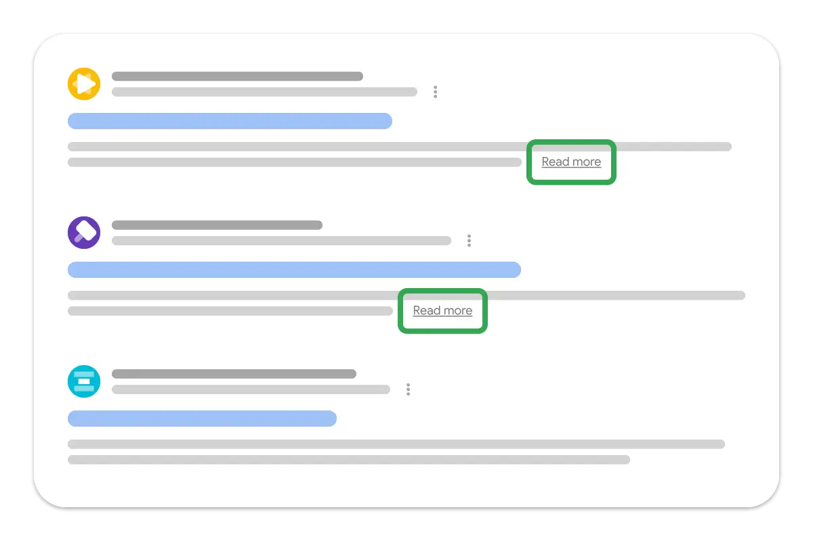

Short answer
Snippet directives tell a crawler how much of a page it may use as an excerpt.
nosnippet asks for no excerpt. max-snippet limits length. A data-nosnippet attribute can exclude a particular element. These are technical controls on reuse of text, not levers that place a page. The result illustration shows one possible row, including a deeper link. It is not a ranking diagram and not this site’s listing.
Definition
A directive that hides the only useful sentence can make the result less understandable without making the page more indexable. Use nosnippet on a page only when showing an excerpt would be the wrong product decision, such as a page whose first lines are a legal warning you do not want detached. Do not use it because a template default turned it on.
What belongs in the page basics
Set snippet directives only for a stated reason, and do not let a global default hide excerpts on product pages.
The visible lead should still be the sentence you are willing to have quoted, because a directive is not the only way text is reused and because GEO answerability wants that sentence on the page. The audit sample is the meta robots content of one product URL and one page where a restriction is intentional.

What to check
- Global nosnippet or max-snippet defaults
- Pages where a restriction is intentional
- Product pages left able to show an excerpt
- Leads that state the fact you would quote
- One restricted URL and one product URL
A practical example
A theme adds nosnippet to every template after a legal review of one disclaimer page. Product results lose excerpts. The health fix keeps nosnippet on the disclaimer and removes it from the theme default. The product lead is rewritten only if it was not worth quoting, which is a writing task, not a meta-tag task.
What this does not claim
Snippet directives do not guarantee rankings or citations.
Where Mika Visibility files this
Mika Visibility files titles, headings, language, and media basics under SEO Health content and structure checks. They help a page be understood. They are not SEO Growth, which asks what coverage is still missing, and they are not a guarantee that an answer product will cite the page.
The result illustration shows a row shape. It is not a position and not a Mika listing.
FAQ
What do snippet directives control?
Snippet directives tell a crawler how much of a page it may use as an excerpt.
Where should a global default not apply?
Set snippet directives only for a stated reason, and do not let a global default hide excerpts on product pages.
Do the directives guarantee rankings?
Snippet directives do not guarantee rankings or citations.
Next step
Run a structured SEO + GEO audit to see health findings, growth gaps, and a blueprint you can act on.
Clearer entities, answers, evidence, and context make pages easier to understand and reference. Results in any answer product are not guaranteed.